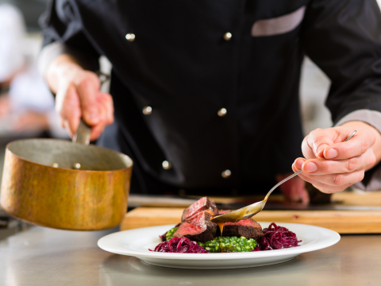

Quem sou
Eu sou a Chef Fernanda.
Cresci acreditando que cozinha boa não se mede pelo tamanho do prato, mas pela precisão de cada escolha. É por isso que me chamam de Micro — porque é no detalhe mínimo que a experiência inteira acontece.
Hoje crio jantares privados e experiências gastronômicas sob medida, onde técnica, sabor e apresentação se encontram em um único momento: o seu.
formação, competições e cozinha autoral
